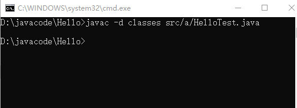
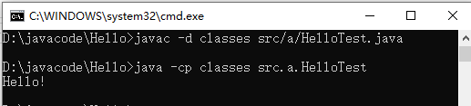

问题：在使用了java包机制（package）后，编译出现错误：找不到或无法加载主类 xxx 的错误提示信息（各种编译不通过）
编译：javac -d classes src/a/HelloTest.java
-d classes :指定存放class文件的路径
src/a/HelloTest.java ：在项目路径：D:\javacode\Hello的基础上指定源文件的路径
此时D:\javacode\Hello\classes路径下已经按照package路径结构生成了class文件

运行：java -cp classes src.a.HelloTest
-cp classes ：指定所要调用的.class文件所在路径（包所在的路径）
src.a.HelloTest :源文件中所设置的package路径（即：包名.类名）

我的本地项目路径：D:\javacode\Hello
源文件HelloTest路径：D:\javacode\Hello\src\a\HelloTest.java
源文件Hello路径：D:\javacode\Hello\src\a\b\Hello.java
注意：Java的package机制非常强调路径，所以路径值指定搞清楚了就不会出问题（可能会有很多人会告诉你是CLASSPATH环境变量配置问题，然而它也只是起一个指定路径的作用，告诉java虚拟机你的class文件所在路径然后执行；所以你自己指定是一样的，没有关系。）
Java的package机制的使用关键在于对路径的设置容易出错；
先了解Java编译运行过程
源文件.java--使用javac编译-->字节码文件.class--使用java解释执行-->特定平台的机器码
使用规则：
1.package语句必须为源文件的第一条语句（注释除外）；
2.一个源文件中只能有一条package语句；
补充：用package机制实继承时，出现 错误：找不到符号 时，可以使用*代替源文件进行编译：
javac *.java
在源文件有package语句时，无论是编译还是运行首先要确定自己作为调用者所在的路径，即cmd窗口所显示的路径（cd指令转换路径），然后以这个路径为基础设置源文件或者class文件的路径（问过一些网友和搜索一些结果，大部分回复什么CLASSPATH环境变量配置，但并不是这样，环境配置终究也是指定class文件的存储目录，方便java命令能直接找到，和我们指定一样，所以环境变量不是关键，要自己理解路径之间的结构关系）；
补充：cmd相关指令：../ 匹配上一层目录（../../为上两层）；* 匹配文件名（如目录下有Hello和HlloTest两个源文件 编译javac Hello*.java会自动匹配到HelloTest）；. 表示当前路径